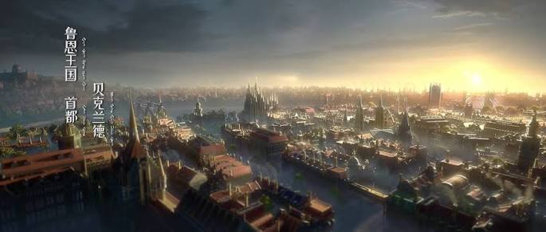
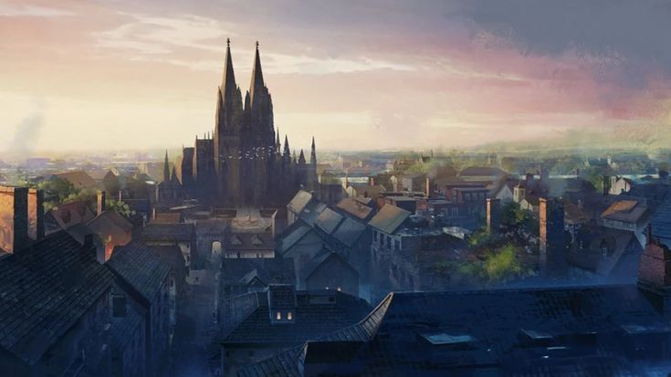
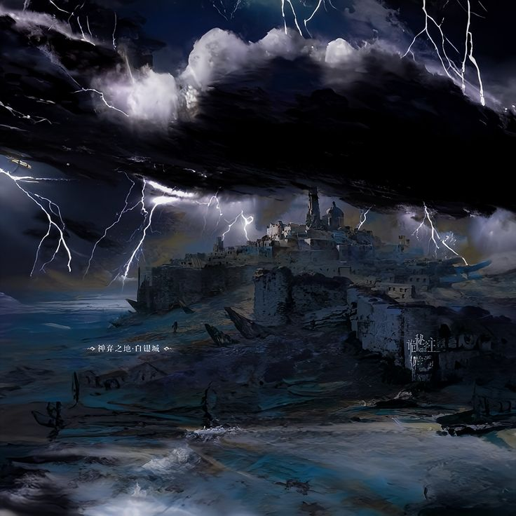
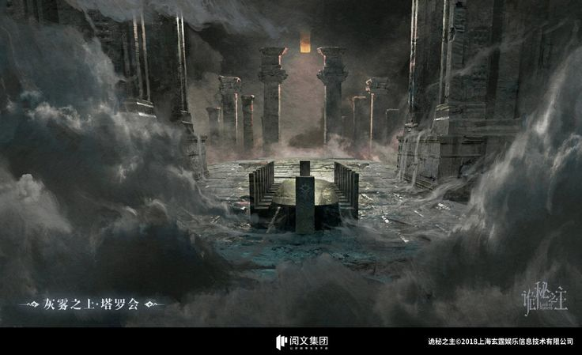
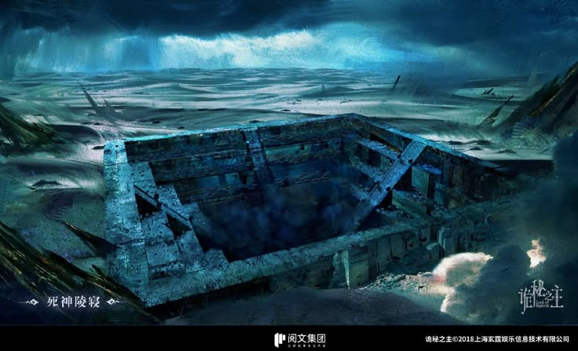

Мир Повелителя тайн
Мир произведения сочетает черты викторианской эпохи, промышленного развития и сверхъестественных явлений. За привычной жизнью городов скрываются древние тайны и места, природа которых остаётся неизвестной.
Навигация
Города и государства

Бэклунд
Столица королевства Лоэн — крупный город, являющийся одним из важнейших центров политической, экономической и общественной жизни.

Тинген
Город, в котором начинается история главного героя. Именно здесь разворачиваются события, знакомящие читателя с устройством мира.
Республика Интис
Одно из четырёх крупнейших государств, расположенных на западе Северного континента. По состоянию на 1358 год Пятой эпохи, Республика Интис является второй по могуществу державой на Северном континенте после Королевства Лоен, за ней следуют Королевство Фейнапоттер и Империя Фейсак.
Королевство Фейнапоттер
Одно из четырех крупнейших государств, расположенных на юге Северного континента. По состоянию на 1358 год Пятой эпохи , это третье по могуществу государство на Северном континенте после Королевства Лоен и Республики Интис, за которым следует Империя Фейсак.
Империя Фейсак
Империя Фейсак (ранее Королевство Фейсак) была основана семьёй Эйнхорн в Четвёртую Эпоху. После поражения страны в Первой мировой войне 1350 года её национальная мощь упала до четвёртого места среди стран Северного континента, уступив Королевству Лоен, Республике Интис и Королевству Фейнапоттер.
Мистические места

Земля, покинутая богами
Загадочная территория, отделённая от привычного мира. Её история и особенности связаны с важными тайнами произведения.

Серый туман
Таинственное пространство, имеющее особое значение в повествовании и связанное с необычными возможностями главного героя.

Перевернутый мавзолей
Перевернутый мавзолей на острове Искусственной Смерти в Море Берсерка.
Мир духов
Мир Духов — это план высшего измерения, населённый духами, как положительными, так и отрицательными, проявляющимися в различных духовных формах. Это место происхождения, охватывающее всех Контрактных Существ, и конвергенция всей информации.
Астральный мир
Астральный мир — это план существования, наполненный абстрактными символами и авторитетами. Пространство внутри Астрального мира физически не существует и представляет собой лишь концепцию и символику пространства.